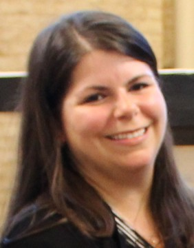

I have been a Social Studies teacher for 14 years, in both Florida and Connecticut. I’ve taught a variety of subjects including History, Geography, Economics, Psychology and Sociology and different levels of difficulty and exceptionalities.
This is my first semester at the University of Missouri and I chose this Master’s program because I want to be able to support my students the best that I can. I have absolutely no web application/development training or experience, so this is my first time learning about this topic. My expectation for the course is to learn how to create a website from scratch and by doing so, have a better understanding of the development process when using technology in the classroom. When I am not teaching, I have finally gotten back into the habit of reading (yay teaching from home!) and spending time with my family: husband, 4-year-old son, and dog. If I am feeling especially motivated, I love crafting- usually something from Pinterest.
Degrees
Certifications
One of my favorite quotes is from "Rosie the Riveter"- created by J.Howard Miller, produced for Westinghouse/The War Production Co-Ordinating Committee, 1942, as found in the National Archives
“We Can Do It!”